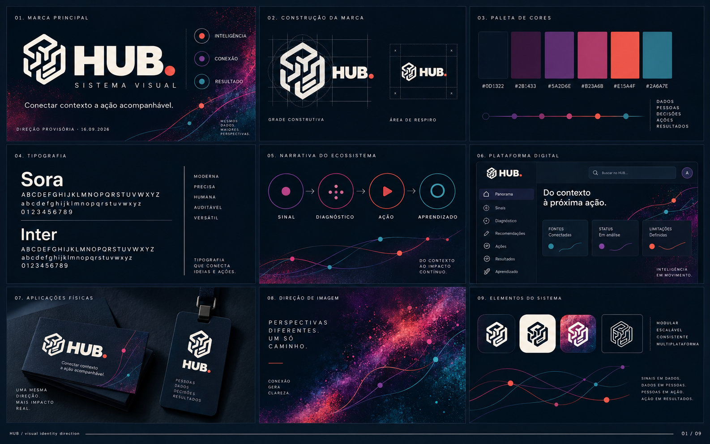

01 / INTERDEPENDÊNCIA
Relações que explicam
Linhas, nós e módulos devem mostrar conexão ou percurso — nunca preencher espaço sem função.
Um guia de trabalho para dar forma consistente a relações, sinais e decisões — com a evidência e a incerteza visíveis no caminho.

O sistema visual transforma a tese HUB em uma linguagem reconhecível: conexões legíveis, precisão humana e uma mensagem por superfície.
Linhas, nós e módulos devem mostrar conexão ou percurso — nunca preencher espaço sem função.
Uma base medida pode ganhar pequenas variações de matéria, textura e cadência.
Fonte, status, período e limitação permanecem próximos de toda informação relevante.
“Uma mesma direção. Mais impacto real.”princípio de aplicação HUB
O símbolo entrelaçado e o terminal coral funcionam como assinatura visual de um sistema que abre espaço para a próxima ação.
Usar a assinatura HUB. com ponto coral terminal. O ponto é uma assinatura visual, não um indicador de status.
Manter pelo menos a altura do ponto em todos os lados no protótipo.
Não reconstruir screenshot como vetor definitivo, alterar proporções ou publicar sem origem, titularidade e aprovação.
Navy e ameixa estruturam. Violeta, magenta, coral e teal pontuam relações, energia e informação.
Uma dupla com personalidade geométrica no display e neutralidade precisa em interface, dados e notas.
Moderna · precisa · humana · auditável · versátil
Leitura contínua para interface, tabelas, labels e evidências.
De 2 a 4 linhas finas atravessam a superfície para traduzir sinal, diagnóstico, ação e aprendizado.
Halftone, granulação e manchas de tinta podem criar atmosfera em capas e campanhas. Nunca sobre áreas de leitura.
Não transformar todo espaço em moodboard, diagrama de rede, gradiente ou grade de cards. A estrutura carrega o significado.
Produtos, programas e superfícies preservam a leitura HUB enquanto ajustam densidade e atmosfera ao contexto.
Canvas escuro, frase dominante e trajetória com poucos pontos de atenção.
Clareza de produto: evidência, status, limitações e próxima ação lado a lado.
Aplicação física com uma mesma direção e impacto mais tangível.
Cor nunca é o único indicador: combinar label, ícone, padrão ou posição.
Antes de promover este sistema para publicação ou runtime, fechar os gates e registrar owner, versão e decisão.
Logo, versões, área de respiro, tamanho mínimo e usos proibidos.
Origem, permissões, assets e owner de identidade visual.
Pares de texto, estados, projetor, impressão e alto contraste.
Licença, pesos, arquivos, fallback e caracteres pt-BR.
Testar slide, dashboard e tabela; registrar versão e decisão.